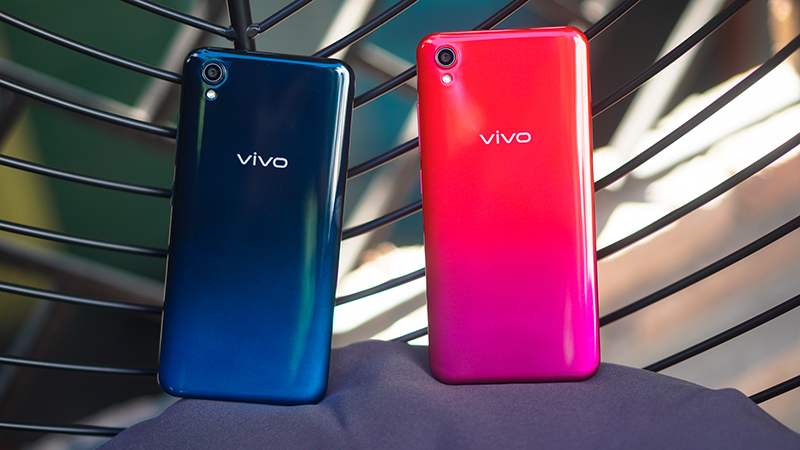
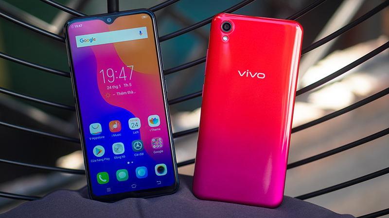
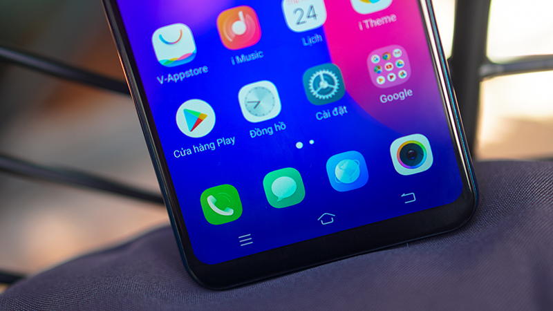
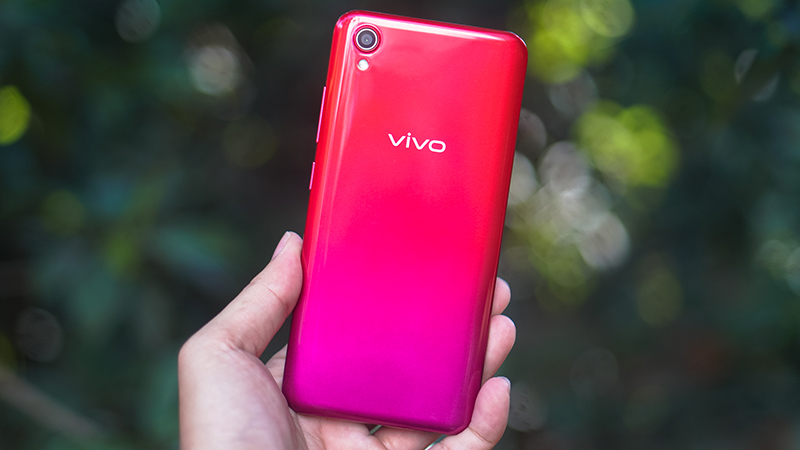
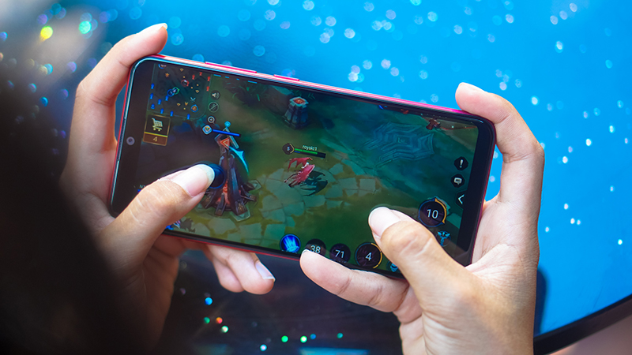
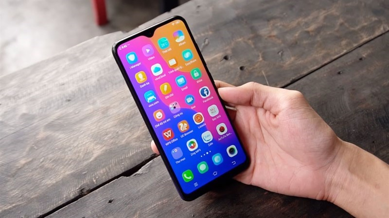

Vivo Y91C đi theo xu hướng với lối thiết kế unibody phong cách cùng điểm nhấn về màu sắc gây mê mẩn người dùng.
Thân máy được vát cong bởi những đường cong mềm mại cho bạn cảm giác thoải mái, dễ chịu và chắc tay khi cầm nắm sử dụng.
Ở mặt lưng của máy nổi bật và lôi cuốn người dùng bởi hiệu ứng màu chuyển tiếp gradient đẹp mắt.
Chiếc smartphone của Vivo này ấn tượng người dùng bởi kiểu hiển thị màn hình khuyết hình giọt nước xinh xắn và đáng yêu.
Kích thước màn hình của Vivo Y91C khá lớn 6.22 inch, sử dụng công nghệ màn hình IPS LCD có độ phân giải HD+. Nhờ thiết kế màn hình lớn giúp không gian hiển thị rộng cho phép người dùng thao tác đa nhiệm dễ dàng, chơi game, xem phim đã mắt.
Chiếc điện thoại Vivo Y91C có cấu hình tầm trung được trang bị con chip xử lí MediaTek 6762R (bản nâng cấp của Helio P22) chạy trên hệ điều hành Android 8.1 (Oreo) kết hợp với giao diện FunTouch giúp máy có được độ mượt mà để trải nghiệm được tốt nhất.
Với đặc điểm cấu hình này sản phẩm có thể chạy ổn định với các tựa game nhẹ và tầm trung như Liên quân Mobile ở mức cấu hình thấp, Temple Run 2,... cho bạn có sự giải trí thư giãn sau những giờ học tập cũng như làm việc căng thẳng.
Vivo Y91C có RAM 2 GB, bộ nhớ trong 32 GB và hỗ trợ gắn thẻ nhớ ngoài lên đến 256 GB giúp bạn có thể thoải mái lưu trữ hình ảnh, video, dữ liệu hạn chế lo lắng.